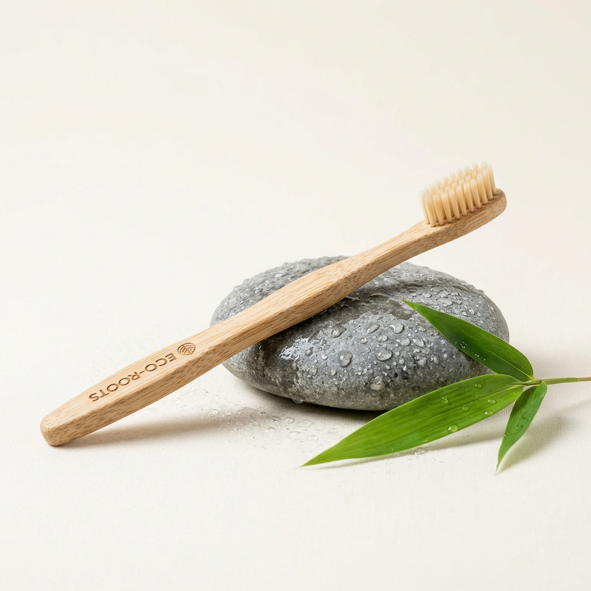
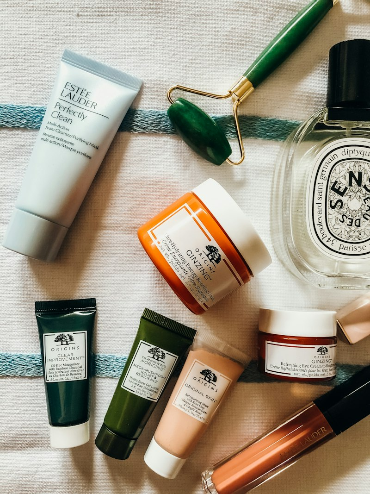
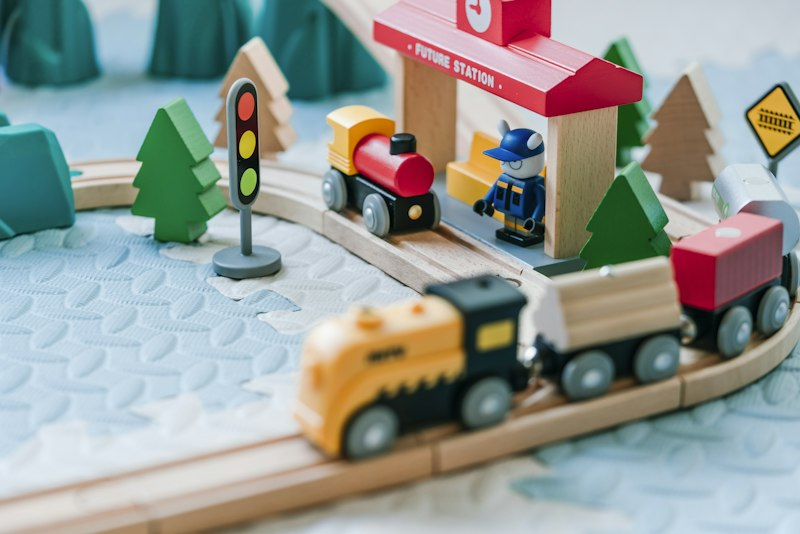

Katalog Produk Ramah Lingkungan
Investasi perlengkapan harian berkualitas tinggi, 100% alami, dan tahan pakai untuk menggantikan ratusan limbah plastik sekali pakai.

Sikat Gigi Bambu Alami
Gagang bambu moso organik antibakteri dengan bulu nilon lembut BPA-free. Gagang dapat dikomposkan alami di tanah setelah habis pakai.

Sponge Serat Loofah Alami
Terbuat dari tanaman oyong/gambas kering alami. Busa melimpah, tidak menggores wajan teflon, dan 100% bebas rontokan mikroplastik.

Sedotan Stainless Steel 3in1
Paket lengkap sedotan lurus, bengkok, dan sedotan boba 12mm. Dilengkapi sikat kawat pembersih dan kantong kain blacu alami yang higienis.

Reusable Canvas Bag Eco
Bahan katun twill tebal 12oz dengan jahitan X bertulang ganda. Muat belanjaan mingguan hingga 20 liter, lengkap dengan saku resleting dalam.
Dapatkan Semua 4 Starter Kit Hanya Rp 99.000!
Lengkap dengan 1 Sikat Gigi Bambu, 1 Loofah Sponge, 1 Set Sedotan Stainless, dan 1 Reusable Canvas Bag. Hemat Rp 57.500 dan dapatkan gratis ongkir se-Jabodetabek & Jawa!